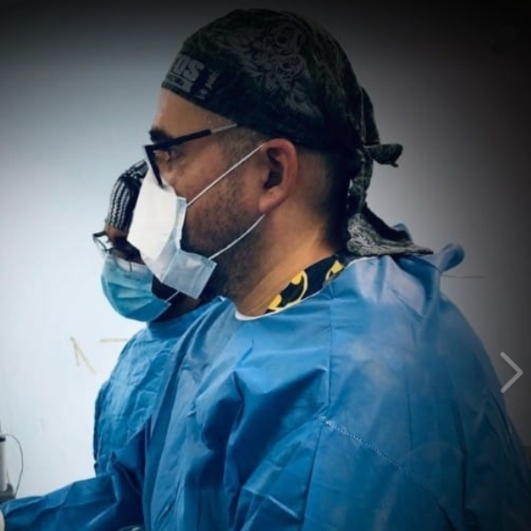

Acerca de
Salvador Meza Velázquez
El doctor Meza Velázquez se recibió como médico general en la Universidad Michoacana de San Nicolás De Hidalgo, realizó su especialidad en Ortopedia y Traumatología en el hospital Regional del ISSSTE Licenciado Adolfo López Mateos de la CDMX, así mismo realizó dos cursos de alta especialidad: el primero en Reemplazos articulares en el Centro Médico Nacional "20 de Noviembre" del ISSSTE y el segundo en artroscopia, realizado en el Hospital de Traumatología y Ortopedia de Lomas Verdes del IMSS.
Especialidad en Ortopedia y Traumatología
Hospital Regional Lic. Adolfo Lopez Mateos del ISSSTE CDMX

Curso de Alta Especialidad en Artroscopia
Hospital de Traumatología y Ortopedia Lomas Verdes del IMSS
Curso de Alta Especialidad en Reemplazos Articulares
Centro Médico Nacional "20 de Noviembre" del ISSSTE
